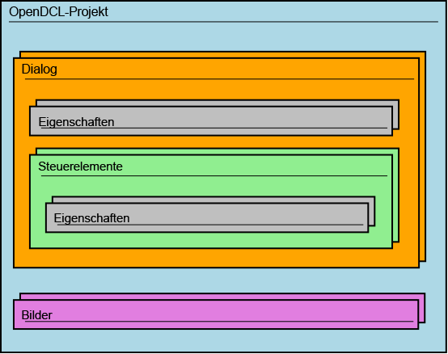

Die AutoLISP-Schnittstelle, die durch die OpenDCL-Laufzeitumgebung geladen wird, lehnt sich an objektorientierte Entwicklungsumgebungen an, während AutoLISP selbst - genau genommen - nicht objektorientiert arbeitet. Nichts desto trotz verwendet OpenDCL ein eigenes Objektmodell, und es ist hilfreich, das Objektmodell zu kennen und zu verstehen, wenn mit OpenDCL programmiert wird. Eine der Konventionen ist, dass beim Aufruf von Methoden oder Abfragen bzw. Zuweisen von Eigenschaften zur Laufzeit das erste Argument immer die Objektinstanz ist, auf die eine Methode angewandt oder an der Eigenschaften geändert werden können.
Die OpenDCL-Objekte stehen im AutoLISP als Entities zur Verfügung (Entity: ein Objektzeiger, der auf die Objektinstanz verweist). Wenn ein OpenDCL-Projekt geladen wird, belegt OpenDCL automatisch AutoLISP-Symbole für jeden Dialog der Projektdatei. Wird ein Dialog aufgerufen, werden automatisch Instanzen der Steuerelemente erstellt und OpenDCL belegt für jedes Steuerelement der Dialogbox AutoLISP-Symbole. Die Namen der AutoLISP-Symbole für Steuerelemente und Dialogboxen werden durch den Inhalt der Eigenschaft VarName bestimmt und dienen der eineindeutigen Zuordnung der Objekte. So wird beispielsweise ein Dialog angezeigt, indem die Methode Form-Show auf das Dialogobjekt (als erstes Argument der Funktion) angewandt wird:
(dcl-Form-Show Project1/Form1)
In diesem Beispiel ist Project1/Form1 ein AutoLISP-Symbol, das automatisch durch OpenDCL belegt wurde, um nach dem Laden des Projekts auf das Dialogobjekt zugreifen zu können. In diesem Fall heißt die Projektdatei Projekt1.odcl und der Dialog in der Projektdatei trägt den Namen "Form1". Selbstverständlich können Sie die Namen der Projektdatei und des Dialog jederzeit ändern.
OpenDCL Objektmodell
Ein OpenDCL-Basisobjekt, das in AutoCAD erstellt wird, ist das Steuerelement. Dialoge sind intern besondere Steuerelemente, so dass Methoden der Steuerelemente auch auf Dialoge angewandt werden können. Ein anderes Basisobjekt von OpenDCL ist das Projekt. OpenDCL erzeugt zudem besondere Objekte wie ImageList, BinFile und AxObject. Jedes dieser Objekte verwendet eigene Methoden und kann mit folgender Syntax angesprochen werden:
(dcl-METHODENNAME <OBJEKT> ARGUMENTE)
Jedes Steuerelement enthält eine Liste von Eigenschaften. Verschiedene Steuerelemente verfügen über verschiedene Eigenschaften, dafür haben alle gleichen Steuerelemente die selben Eigenschaften. Einige Steuerelemente, wie ActiveX-Steuerelemente, haben neben den standardmäßig zur Verfügung stehenden OpenDCL-Eigenschaften zusätzliche Eigenschaften. Die Eigenschaften werden nicht als unabhängige Objekte abgebildet; der Zugriff erfolgt über die Eigentümerobjekte sowie ihren Namen entsprechend der nachfolgenden Konvention, wobei der Eigenschaftsname der Name in der API und nicht der lokale Name ("sprechende Name") ist:
(dcl-Control-GetEIGENSCHAFT <CONTROL>) (dcl-Control-SetEIGENSCHAFT <CONTROL> NEUERWERT)
Alternativ kann der Zugriff auf die Eigenschaften mit Hilfe der generischen Methoden Control-GetProperty und Control-SetProperty erfolgen.
OpenDCL Projektstruktur
Wie Sie aus dem folgenden Strukturdiagramm entnehmen können, enthält ein OpenDCL-Projekt Dialoge und Bilder (Symbole, Icons). Dialoge verfügen über Eigenschaften und enthalten Steuerelemente, die ihrerseits über Eigenschaften verfügen. Die Laufzeitumgebung von OpenDCL kann beliebig viele Projekte parallel laden, so dass mehrere voneinander unabhängige OpenDCL-Applikationen innerhalb von AutoCAD arbeiten können, ohne sich gegenseitig zu stören.

OpenDCL Steuerelemente
Der Zugriff auf Steuerelemente und Dialoge in AutoLISP erfolgt über AutoLISP-Symbole, die den Objektzeiger für das jeweilige Steuerelement enthalten. Diese Symbole werden automatisch im Namensraum jeder Zeichnung erstellt und belegt, sobald eine Instanz des Dialogs aktiv ist. Standardmäßig setzt sich der AutoLISP-Symbolname für das Steuerelement aus dem Projektnamen, dem Dialognamen und dem Namen des Steuerelements zusammen, getrennt durch einen Schrägstrich (/), wie nachfolgendes Beispiel zeigt.
ProjectKey/FormName/ControlName
Der Symbolname können Sie überschreiben, indem Sie den Wert der Eigenschaft VarName des Steuerelements anpassen. Um das Risiko von Doppeltbelegungen zwischen den Applikationen zu vermeiden, empfehlen wir dringend die vorgabemäßige Namensgebung beizubehalten.